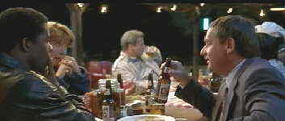

| Primary Colors/A,A |
| Universal/1998/144m/ANA,WS 2.35 |
What a riveting experience, sharing the
campaign trail with the crew assembled under the guidance of Mike Nichols for Primary Colors.
After three viewings of this terrific movie, it still remains fresh, savvy, and all too often
uncanny in its picture of political posturing and the reality of American politics. The close
association with President Bill Clinton and company may make the movie more titillating, but
eliminate the Clinton associations, and this thoroughly intelligent film stands the test of
perceptiveness.
 |
|
The Mommathon. ©Universal
|
Rife with scandal, scathingly funny, and
cunningly poignant, the script by Elaine May is the best work she has ever done. With a running
time of 144 minutes you might expect Primary Colors to have periods of slack time, but the
pace is much like a roller coaster political campaign, breathtaking, exhilarating, and filled with
unexpected touches.
John Travolta is amazing as southern governor and presidential candidate
Jack Stanton. Travolta manages a good old boy style with maximum charm, keeping a wily intelligence
evident below the surface. Along on the campaign trail are Emma Thompson as Susan Stanton, tough
and realistic as any Hilary ever might be, Billy Bob Thornton ogling the women and weaving
metaphorical "bears in the woods" stories with all the glibness of a professional
political analyst. Competing with Travolta's star turn is Kathy Bates' portrayal of political dirt
digger and injured idealist Libby Holden. You won't forget the performances!
Reds are brilliant, rich and perfectly contained, whites are stable with
no distortion and blues are deep and clean. Primary Colors is a sharp DVD and comes close to
perfection, save for some slight edge enhancement and a few scenes where the grain appears too
prominent. The image is dead on sharp. You can delve into the characters souls through their eyes.
Ry Cooder's excellent Americana inspired score is open and levels compliment the action
harmoniously. Political rallies come to life through the excellent directionality of the Dolby
Digital 5:1 encoding.
|
|


What actor would you vote whose screen persona best exemplified the fabric of the president of the
United States? Check act Acting Presidential for a look at the many actors
who have coveted The Oval Office.
The Feature Archive
has articles ranging from Akira
Kurosawa to Blonde Bimbos.
Movie Rage: Death in the Aisles
Everyone knows what it feels like to get angry at the
movies these days. Here's a humorous but not so delightful view of big screen misery.

Fred and Ginger tapped their way into the hearts of movie fans everywhere. Stu Kobak takes a look at some of those
dance movies that gifted audiences toe-tapping pleasure. Click on the image to get in on the beat.
 . .
The
Movie Poster Archive includes extensive poster images from the films of stars like Susan Hayward,
Kirk Douglas, Katharine Hepburn and many more. Our featured star is Cary Grant.
|